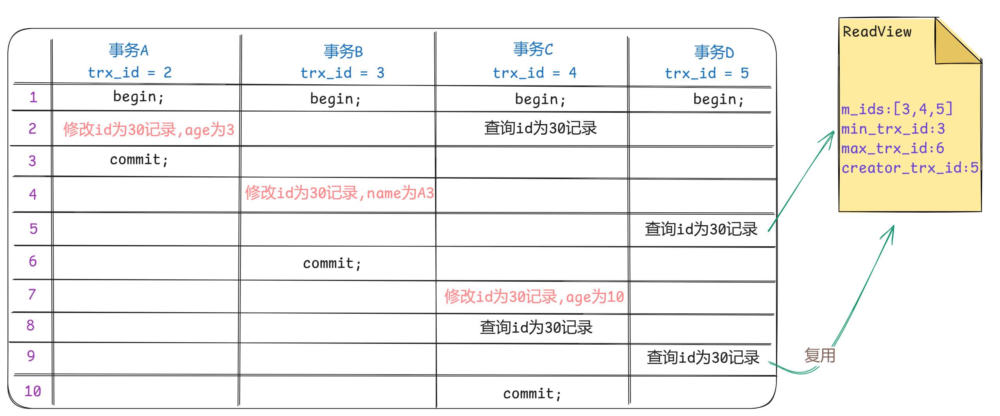

mysql innodb
mysql 引擎
InnoDB
- InnoDB是一种兼顾高可靠性和高性能的通用存储引擎，在MySQL 5.5之后，InnoDB是默认的MySQL存储引擎。
- 特点：
- DML操作遵循ACID模型，支持事务。
- 行级锁，提高并发访问性能。
- 支持外键FOREIGN KEY约束，保证数据的完整性和正确性。
- xxx.ibd：xxx代表的是表名，innoDB引擎的每张表都会对应这样一个表空间文件，存储该表的表结构（frm-早期的 、sdi-新版的）、数据和索引。
- 如果该参数开启，代表对于InnoDB引擎的表，每一张表都对应一个ibd文件。
show variables like 'innodb_file_per_table';
MyIsam
- MyISAM是MySQL早期的默认存储引擎。
- 特点：
- 不支持事务，不支持外键。
- 支持表锁，不支持行锁。
- 访问速度快。
- 文件：
- xxx.sdi：存储表结构信息。
- xxx.MYD: 存储数据。
- xxx.MYI: 存储索引。
Memory
- Memory引擎的表数据时存储在内存中的，由于受到硬件问题、或断电问题的影响，只能将这些表作为临时表或缓存使用。
- 特点：内存存放、hash索引（默认）。
- 文件：xxx.sdi：存储表结构信息
对比
| 特点 | InnoDB | MyIsam | Memory |
|---|---|---|---|
| 存储限制 | 64TB | 有 | 有 |
| 事务安全 | 支持 | - | - |
| 锁机制 | 行锁 | 表锁 | 表锁 |
| B+tree索引 | 支持 | 支持 | 支持 |
| Hash索引 | - | - | 支持 |
| 全文索引 | 支持(5.6版本之后) | 支持 | - |
| 空间使用 | 高 | 低 | N/A |
| 内存使用 | 高 | 低 | 中等 |
| 批量插入速度 | 低 | 高 | 高 |
| 支持外键 | 支持 | - | - |
- InnoDB引擎与MyISAM引擎的区别：
- InnoDB引擎, 支持事务, 而MyISAM不支持。
- InnoDB引擎, 支持行锁和表锁, 而MyISAM仅支持表锁, 不支持行锁。
- InnoDB引擎, 支持外键, 而MyISAM是不支持的。
InnoDB引擎
架构
- MySQL5.5 版本开始，默认使用InnoDB存储引擎，它擅长事务处理，具有崩溃恢复特性，在日常开发中使用非常广泛。
- 下面是InnoDB架构图，左侧为内存结构，右侧为磁盘结构。
内存结构
- Buffer Pool：缓冲池 Buffer Pool，是主内存中的一个区域，里面可以缓存磁盘上经常操作的真实数据，在执行增删改查操作时，先操作缓冲池中的数据（若缓冲池没有数据，则从磁盘加载并缓存），然后再以一定频率刷新到磁盘，从而减少磁盘IO，加快处理速度。
- 在专用服务器上，通常将多达80％的物理内存分配给缓冲池。
- 参数设置：show variables like ‘innodb_buffer_pool_size’。
- Change Buffer：更改缓冲区（针对于非唯一二级索引页），在执行DML语句时，如果这些数据Page没有在Buffer Pool中，不会直接操作磁盘，而会将数据变更存在更改缓冲区Change Buffer中，在未来数据被读取时，再将数据合并恢复到Buffer Pool中，再将合并后的数据刷新到磁盘中。
- Adaptive Hash Index：自适应hash索引，用于优化对Buffer Pool数据的查询。InnoDB存储引擎会监控对表上各索引页的查询，如果观察到在特定的条件下hash索引可以提升速度，则建立hash索引，称之为自适应hash索引。
- Log Buffer：日志缓冲区，用来保存要写入到磁盘中的log日志数据（redo log 、undo log），默认大小为 16MB，日志缓冲区的日志会定期刷新到磁盘中。如果需要更新、插入或删除许多行的事务，增加日志缓冲区的大小可以节省磁盘I/O。参数：
- innodb_log_buffer_size：缓冲区大小
- innodb_flush_log_at_trx_commit：日志刷新到磁盘时机，取值主要包含以下三个：
- 1: 日志在每次事务提交时写入并刷新到磁盘，默认值。
- 0: 每秒将日志写入并刷新到磁盘一次。
- 2: 日志在每次事务提交后写入，并每秒刷新到磁盘一次。
磁盘结构
- System Tablespace：系统表空间是更改缓冲区的存储区域。如果表是在系统表空间而不是每个表文件或通用表空间中创建的，它也可能包含表和索引数据。参数 innodb_data_file_path。
- File-Per-Table Tablespaces：如果开启了innodb_file_per_table开关 ，则每个表的文件表空间包含单个InnoDB表的数据和索引，并存储在文件系统上的单个数据文件中。开关参数 innodb_file_per_table ，该参数默认开启。
- General Tablespaces：通用表空间，需要通过 CREATE TABLESPACE 语法创建通用表空间，在创建表时，可以指定该表空间。
- Undo Tablespaces：撤销表空间，MySQL实例在初始化时会自动创建两个默认的undo表空间（初始大小16M），用于存储undo log日志。
- Temporary Tablespaces：InnoDB 使用会话临时表空间和全局临时表空间。存储用户创建的临时表等数据。
- Doublewrite Buffer Files：双写缓冲区，innoDB引擎将数据页从Buffer Pool刷新到磁盘前，先将数据页写入双写缓冲区文件中，便于系统异常时恢复数据。
- Redo Log：重做日志，是用来实现事务的持久性。该日志文件由两部分组成：重做日志缓冲（redo log buffer）以及重做日志文件（redo log）,前者是在内存中，后者在磁盘中。当事务提交之后会把所有修改信息都会存到该日志中, 用于在刷新脏页到磁盘时,发生错误时, 进行数据恢复使用。
后台线程
- 在InnoDB的后台线程中，分为4类，分别是：Master Thread 、IO Thread、Purge Thread、Page Cleaner Thread。
- Master Thread：核心后台线程，负责调度其他线程，还负责将缓冲池中的数据异步刷新到磁盘中, 保持数据的一致性，还包括脏页的刷新、合并插入缓存、undo页的回收。
- IO Thread：在InnoDB存储引擎中大量使用了AIO来处理IO请求, 这样可以极大地提高数据库的性能，而IO Thread主要负责这些IO请求的回调。通过 show engine innodb status \G; 查看。
| ————线程类型———— | 默认个数 | 职责 |
|---|---|---|
| Read thread | 4 | 负责读操作 |
| Write thread | 4 | 负责写操作 |
| Log thread | 1 | 负责将日志缓冲区刷新到磁盘 |
| Insert buffer thread | 1 | 负责将写缓冲区内容刷新到磁盘 |
- Purge Thread：主要用于回收事务已经提交了的undo log，在事务提交之后，undo log可能不用了，就用它来回收。
- Page Cleaner Thread：协助 Master Thread 刷新脏页到磁盘的线程，它可以减轻 Master Thread 的工作压力，减少阻塞。
事务原理
- 事务：是一组操作的集合，它是一个不可分割的工作单位，事务会把所有的操作作为一个整体一起向系统提交或撤销操作请求，即这些操作要么同时成功，要么同时失败。
- 特性：
- 原子性（Atomicity）：事务是不可分割的最小操作单元，要么全部成功，要么全部失败。
- 一致性（Consistency）：事务完成时，必须使所有的数据都保持一致状态。
- 隔离性（Isolation）：数据库系统提供的隔离机制，保证事务在不受外部并发操作影响的独立环境下运行。
- 持久性（Durability）：事务一旦提交或回滚，它对数据库中的数据的改变就是永久的。
- 而对于这四大特性，实际上分为两个部分。
- 其中的原子性、一致性、持久化，实际上是由InnoDB中的两份日志来保证的，一份是redo log日志，一份是undo log日志。
- 而持久性是通过数据库的锁，加上MVCC来保证的。
redo log
- 重做日志，记录的是事务提交时数据页的物理修改，是用来实现事务的持久性。
- 该日志文件由两部分组成：重做日志缓冲（redo log buffer）以及重做日志文件（redo log file）,前者是在内存中，后者在磁盘中。
- 当事务提交之后会把所有修改信息都存到该日志文件中, 用于在刷新脏页到磁盘,发生错误时, 进行数据恢复使用。
- 有了redolog之后，当对缓冲区的数据进行增删改之后，会首先将操作的数据页的变化，记录在redo log buffer中。在事务提交时，会将redo log buffer中的数据刷新到redo log磁盘文件中。过一段时间之后，如果刷新缓冲区的脏页到磁盘时，发生错误，此时就可以借助于redo log进行数据恢复，这样就保证了事务的持久性。而如果脏页成功刷新到磁盘或者涉及到的数据已经落盘，此时redolog就没有作用了，就可以删除了，所以存在的两个redolog文件是循环写的。
- 在业务操作中，我们操作数据一般都是随机读写磁盘的，而不是顺序读写磁盘。 而redo log在往磁盘文件中写入数据，由于是日志文件，所以都是顺序写的。顺序写的效率，要远大于随机写。 这种先写日志的方式，称之为WAL（Write-Ahead Logging）。
undo log
- 回滚日志，用于记录数据被修改前的信息,作用包含两个: 提供回滚(保证事务的原子性)和MVCC(多版本并发控制)。
- undo log和redo log记录物理日志不一样，它是逻辑日志。可以认为当delete一条记录时，undo log中会记录一条对应的insert记录，反之亦然，当update一条记录时，它记录一条对应相反的update记录。当执行rollback时，就可以从undo log中的逻辑记录读取到相应的内容并进行回滚。
- Undo log销毁：undo log在事务执行时产生，事务提交时，并不会立即删除undo log，因为这些日志可能还用于MVCC。
- Undo log存储：undo log采用段的方式进行管理和记录，存放在前面介绍的rollback segment回滚段中，内部包含1024个undo log segment。
MVCC
基本概念
当前读
- 读取的是记录的最新版本，读取时还要保证其他并发事务不能修改当前记录，会对读取的记录进行加锁。
- 对于我们日常的操作，如：(都是一种当前读)
- select … lock in share mode (共享锁)
- select … for update、update、insert、delete (排他锁)
- 在默认的RR隔离级别下，事务A第(5)步能读取到事务B第(3)步提交的数据。
- 因为在查询语句后面加上了lock in share mode共享锁，此时是当前读操作。
- 当然，当我们加排他锁的时候，也是当前读操作。
快照读
- 简单的select（不加锁）就是快照读，快照读，读取的是记录数据的可见版本，有可能是历史数据，不加锁，是非阻塞读。
- Read Committed (读已提交)：每次select，都生成一个快照读。
- Repeatable Read (可重复读)：开启事务后第一个select语句才是快照读的地方。
- Serializable (串行化)：快照读会退化为当前读。
MVCC
- 全称 Multi-Version Concurrency Control，多版本并发控制。
- 指维护一个数据的多个版本，使得读写操作没有冲突，快照读为MySQL实现MVCC提供了一个非阻塞读功能。
- MVCC的具体实现，还需要依赖于数据库记录中的三个隐式字段、undo log日志、readView。
隐藏字段
- 当我们创建一张表时，除了我们自己定义的字段外，InnoDB还会自动给我们添加三个隐藏字段。
- 前两个字段是肯定会添加的，是否添加最后一个字段DB_ROW_ID，得看当前表有没有主键，如果有主键，则不会添加该隐藏字段。
| 隐藏字段 | 含义 |
|---|---|
| DB_TRX_ID | 最近修改事务ID，记录插入这条记录或最后一次修改该记录的事务ID |
| DB_ROLL_PTR | 回滚指针，指向这条记录的上一个版本，用于配合undo log，指向上一个版本 |
| DB_ROW_ID | 隐藏主键，如果表结构没有指定主键，将会生成该隐藏字段 |
undo log
- 回滚日志，在insert、update、delete的时候产生的便于数据回滚的日志。
- 当insert的时候，产生的undo log日志只在回滚时需要，在事务提交后，可被立即删除。
- 而update、delete的时候，产生的undo log日志不仅在回滚时需要，在快照读时也需要，不会立即被删除。
版本链
- 有一张表原始数据为：
- DB_TRX_ID：代表最近修改事务ID，记录插入这条记录或最后一次修改该记录的事务ID，是自增的。
- DB_ROLL_PTR：由于这条数据是才插入的，没有被更新过，所以该字段值为null。
| id | age | name | DB_TRX_ID | DB_ROLL_PTR |
|---|---|---|---|---|
| 30 | 30 | A30 | 1 | null |
- 然后，有四个并发事务同时在访问这张表。
| ———–事务A———– | ———–事务B———– | ———–事务C———– | ———–事务D———– |
|---|---|---|---|
| 开始事务 | 开始事务 | 开始事务 | 开始事务 |
修改id为30记录，age为3 |
查询id为30的记录 |
- 当事务A执行第一条修改语句时，会记录undo log日志，记录数据变更之前的样子；然后更新记录，并且记录本次操作的事务ID，回滚指针，回滚指针用来指定如果发生回滚，回滚到哪一个版本。
- 然后，事务A提交事务，事务B更新记录。
| ———–事务A———– | ————事务B———— | ———–事务C———– | ———–事务D———– |
|---|---|---|---|
| 开始事务 | 开始事务 | 开始事务 | 开始事务 |
修改id为30记录，age为3 |
查询id为30的记录 | ||
| 提交事务 | |||
修改id为30记录，name为A3 |
- 当事务B执行第一条修改语句时，也会记录undo log日志，记录数据变更之前的样子；然后更新记录，并且记录本次操作的事务ID，回滚指针，回滚指针用来指定如果发生回滚，回滚到哪一个版本。
- 紧接着，事务B提交，事务C更新记录。
| ———–事务A———– | ————事务B———— | ————–事务C————- | ——–事务D——– |
|---|---|---|---|
| 开始事务 | 开始事务 | 开始事务 | 开始事务 |
修改id为30记录，age为3 |
查询id为30的记录 | ||
| 提交事务 | |||
修改id为30记录，name为A3 |
|||
| 查询id为30的记录 | |||
| 提交事务 | |||
修改id为30记录，age为10 |
|||
| 查询id为30的记录 | |||
| 查询id为30的记录 | |||
| 提交事务 |
- 当事务C执行第一条修改语句时，也会记录undo log日志，记录数据变更之前的样子；然后更新记录，并且记录本次操作的事务ID，回滚指针，回滚指针用来指定如果发生回滚，回滚到哪一个版本。
- 不同事务或相同事务对同一条记录进行修改，会导致该记录的undolog生成一条记录版本链表，链表的头部是最新的旧记录，链表尾部是最早的旧记录。
readview
- ReadView（读视图）是快照读SQL执行时MVCC提取数据的依据，记录并维护系统当前活跃的事务（未提交的）id。
- ReadView中包含了四个核心字段：
| 字段 | 含义 |
|---|---|
| m_ids | 当前活跃的事务ID集合 |
| min_trx_id | 最小活跃事务ID |
| max_trx_id | 预分配事务ID，当前最大事务ID+1（因为事务ID是自增的） |
| creator_trx_id | ReadView创建者的事务ID |
- 而在readview中就规定了版本链数据的访问规则：trx_id 代表当前undolog版本链对应事务ID。
| ———————-条件———————- | 是否可以访问 | 说明 |
|---|---|---|
| trx_id == creator_trx_id | 可以访问该版本 | 数据是当前这个 |
| trx_id < min_trx_id | 可以访问该版本 | 数据已经提交了 |
| trx_id > max_trx_id | 不可以访问该版本 | 该事务是在ReadView生成后才开启 |
| min_trx_id <= trx_id <= max_trx_id | 如果trx_id不在m_ids中，是可以访问该版本的 | 数据已经提交 |
- 不同的隔离级别，生成ReadView的时机不同
- READ COMMITTED (读已提交)：在事务中每一次执行快照读时生成ReadView。
- REPEATABLE READ (可重复读)：仅在事务中第一次执行快照读时生成ReadView，后续复用该ReadView。
原理分析
RC隔离级别
- RC隔离级别下，在事务中每一次执行快照读时生成ReadView。
- 分析事务D中，两次快照读读取数据，是如何获取数据的。在事务D中，查询了两次id为30的记录，由于隔离级别为Read Committed，所以每一次进行快照读都会生成一个ReadView，那么两次生成的ReadView。
- 先来看第一次快照读具体的读取过程：
- 当trx_id=3代入判断规则中，(1)~(4)都不满足。
- 当trx_id=2代入判断规则中，(1)都不满足，(2)满足。因此读取的是这条数据。
- 第二次快照读具体的读取过程：
- 当trx_id=4代入判断规则中，(1)~(4)都不满足。
- 当trx_id=3代入判断规则中，(1)都不满足，(2)满足。因此读取的是这条数据。
RR隔离级别
- RR隔离级别下，仅在事务中第一次执行快照读时生成ReadView，后续复用该ReadView。
- 而RR是可重复读，在一个事务中，执行两次相同的select语句，查询到的结果是一样的。

- 第一次与RC一样：
- 当trx_id=3代入判断规则中，(1)~(4)都不满足。
- 当trx_id=2代入判断规则中，(1)都不满足，(2)满足。因此读取的是这条数据。
- 第二次快照读具体的读取过程：
- 当trx_id=4代入判断规则中，(1)~(4)都不满足。
- 当trx_id=3代入判断规则中，(1)~(4)都不满足。
- 当trx_id=2代入判断规则中，(1)都不满足，(2)满足。因此读取的是这条数据。
- 可以看出同一个事务内多次读确实是同一数据。
总结
- MVCC的实现原理就是通过InnoDB表的隐藏字段、UndoLog 版本链、ReadView来实现的。
- 而MVCC + 锁，则实现了事务的隔离性。 而一致性则是由redolog与undolog保证。